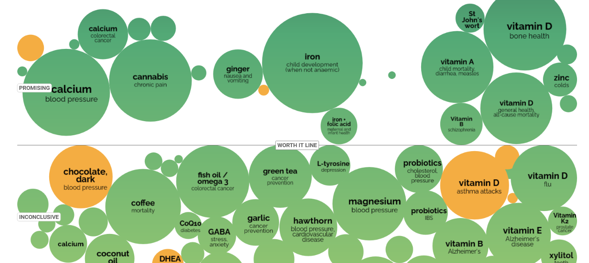

Витамин D делает тебя бессмертным
Я изначально шла туда для того, чтобы понять, надо ли мне добивать витамином D для депрессии. Но я искала медь, а нашла золото!

Витамин D, по словам этого сайта, “promising” для уменьшения “смерти от всех причин”. Вероятно, он не только уменьшает твои шансы развития рака или, скажем, сердечного приступа, но еще и делает тебя неуязвимей к пулям, гильотинам, сжиганию на костре, ядерному удару, призыву в армию! Воистину, какое волшебное вещество. А витамин А, кстати, уменьшает “детскую смертность” – то есть он как витамин D, но видимо хуже работает с возрастом.
…ладно, разумеется, скорее всего это просто кто-то очень тупо подбирает названия для своих статистических инструментов, но мне все равно нравится идея таблеток с витамином D как кусков сыра из Скайрима – в тебя стреляют, а ты их ешь, и стреляющий такой “что ж ты все не сдохнешь”, но пока у тебя достаточно витамина D, ты бессмертен…
 Ответить по почте
Ответить по почте Оставить анонимный комментарий
Оставить анонимный комментарий